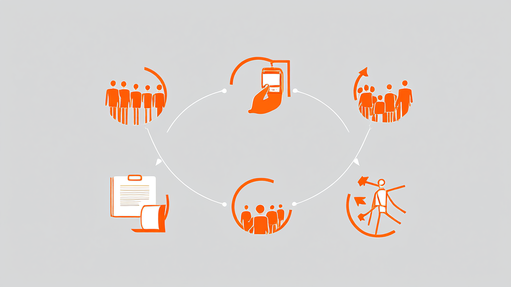

中医诊所微信就医平台案例：预约挂号缴费查报告一体化｜讯业信息
讯业信息（河南讯业信息科技有限公司）为区域性中医诊所及基层医疗机构打造了一体化微信就医平台，患者无需下载App，通过微信服务号+H5即可完成预约挂号、候诊排队、线上缴费、查报告与电子健康档案查询的全流程。平台由患者端、医生工作台、运营管理后台三端构成，共用同一套数据，形成“挂号—就诊—缴费—报告—档案”的完整闭环。上线后，现场挂号排队、二次排队缴费、到院领取报告、纸质档案缺失、选科困难五类就医断点被流程化消除，一个微信号还可代办全家就医。该方案验证了在基层医疗场景下，轻量入口、可靠支付与统一数据底座可以同时成立。
- 就医平台由患者端、医生工作台、运营管理后台三端构成，共用同一套数据形成完整闭环 3端（患者端微信H5 / 医生工作台 / 运营管理后台）
- 平台上线后系统性消除挂号、缴费、报告、档案、选科五类反复出现的就医断点 5个就医断点
- 一个微信号可添加多位家庭成员并切换就诊人，档案仍归属就诊人本人 1个微信号覆盖全家就医
- 检查报告出具后患者端即时可见并触发微信通知，原件可在线预览 到院领取报告次数降为0次
- 支付按订单号幂等、号源实时扣减与超时回收，排班与价格调整不影响既有订单与预约 重复扣款0次、超卖0次（机制保障）
- 平台无需下载安装，微信一键登录即用，技术底座由微信服务号+H5、授权登录、支付服务商模式、订阅消息、商家小票回流、多诊所数据隔离构成 7项技术组件
中医诊所微信就医平台案例：预约挂号、缴费、查报告一体化闭环
结论性开篇摘要
面向中医诊所及基层医疗机构的一体化微信就医平台，患者无需下载 App，用微信即可完成预约挂号、候诊排队、缴费、查报告、查档案的全流程。平台由患者端、医生工作台、运营管理后台三端构成，共用同一套数据，形成“挂号—就诊—缴费—报告—档案”的完整闭环。讯业信息在该项目中以微信服务号 + H5 为技术底座，将高频就医动作从线下窗口迁移至手机端，使挂号与缴费不再二次排队、检查报告出具即时推送并可在线查看，一个微信号还可代办全家就医。对基层医疗机构而言，这既是服务体验的改善，也是运营效率与基层医疗信息化水平的一次实质性升级。
方案关键词：微信就医平台、诊所预约挂号系统、中医诊所管理系统、AI就医助手、电子健康档案、线上缴费、基层医疗信息化
行业背景与挑战：基层中医诊所的就医体验短板
中医诊所与基层医疗机构的患者结构有明显特征：以周边居民、老年人及家庭用户为主，复诊率高、家庭共同就诊比例高。日常业务高度集中在五类动作上——挂号、候诊、缴费、检查报告、健康档案。业务本身并不复杂，但容错空间很小：任何一个环节出现排队、往返或信息缺失，都会被高频次放大为持续的不满。
对连锁与多诊所机构而言，管理侧的挑战同样具体。排班需要在各诊所之间统一维护，开单与收费项目要口径一致，消息推送、账号权限、协议管理都需要集中管控。传统依赖电话登记与纸质记录的基层医疗信息化方式，难以支撑多点位的协同，一旦门店数量增加，信息断层就会显现。
患者侧还存在一个长期被低估的成本：对诊所专长与医生方向不了解，不知道该挂哪个科；老年人与儿童的就医信息由家属代记，说不清病史、记不住用药。这些沟通成本最终都转化为诊室里的时间损耗与挂号窗口前的反复询问。
客户痛点：五个反复出现的就医断点

本案客户为区域性中医诊所及基层医疗机构，含多诊所运营场景。在平台落地前，其就医流程中存在五个反复出现的断点，具有较强行业共性：
- 挂号排队断点：现场挂号排队时间长；电话约号容易约错时段、约完记不住，到店后仍需在窗口核对确认，预约并未真正转化为“到店即诊”。
- 缴费二次排队断点：患者看完病后需要再次到收费窗口排队缴费，诊疗动作已经结束，流程却仍在继续，医生开完单也只能等待患者完成支付。
- 报告再跑一趟断点：检查报告出具后，患者需要再次到院领取，对老年患者和家属代诊场景尤其不便，报告的实际价值被延迟。
- 健康档案断点：纸质病历易丢失，家庭健康信息零散分布于不同人的记忆与不同次的纸张记录中，老人小孩的就医信息全靠家属口述，跨次就诊难以延续，电子健康档案实际上是缺位的。
- 选科断点：患者不了解诊所专长与医生方向，不知道自己该挂哪个科，进一步加剧了挂号环节的沟通与等待，也影响就诊匹配度。
这五个断点相互叠加：因为不知道该挂哪个科，所以要在窗口反复询问；因为要排队，所以现场滞留；因为要二次缴费、再跑一趟取报告，所以一次就诊被拆成多次到院。
解决方案：一体化微信就医平台的三端设计

针对上述断点，讯业信息为客户搭建了一体化微信就医平台，核心思路是“把高频动作全部搬进微信，把供给端工具一次性配齐”。平台不采用自建 App 路线，而是以微信服务号 + 微信 H5 承载患者侧全部操作，微信一键登录即可使用，老年患者与家庭用户无需下载、无需注册新账号。
患者端：预约挂号、缴费、查报告的高频动作闭环
患者端围绕就医全流程组织功能：微信一键登录后进入诊所首页，可按科室导航选医生；预约挂号页面展示实时号源，选择时段下单后获得取号密码与预约提醒，到店直接候诊，不再重复排队挂号。
诊中环节，医生在诊间直接开缴费单，患者在微信内一键支付并查看费用明细，同时可实时查看候诊进度。诊后环节，医生点击出具报告后患者端即时可见并触发微信通知，检验单据原件支持在线预览，无需到院领取；实名认证后系统自动建立电子健康档案，就诊记录归档至本人名下。
家庭成员管理是家庭就医场景的关键设计：一个微信号可添加多位家庭成员，切换就诊人即可代为约号、缴费、查报告，而档案仍归属就诊人本人，不会因为代操作而混淆健康数据。
AI 智能就医助手以悬浮球形式全局常驻，以聊天式问诊引导患者描述症状，支持报告与药盒拍照识别，并基于真实排班推荐医生、直达预约入口，直接回应“不知道挂哪个科”这一选科断点。平台另提供体质辨识问卷、消息中心与微信订阅通知、敏感信息脱敏与实名认证尝试次数保护等特色功能。
医生工作台与运营管理后台：供给端的配套工具
医生工作台承担排班管理、预约与接诊管理、开具缴费单、检查报告上传、就诊记录归档，并支持身份自动识别，减少重复录入。运营管理后台面向经营者，统一维护诊所信息、医生与就诊人、科室与费用项、消息推送、协议与账号权限，使运营动作可配置、可追溯。
技术底座
平台基于微信服务号与微信 H5（免下载即用）、微信授权登录、微信支付服务商模式（回调确认、按订单号幂等）、微信订阅消息通知、微信商家小票／点金计划支付后回流，以及多诊所数据隔离架构构建，AI 智能就医助手支持拍照识别。
三端功能对照
| 模块类别 | 患者端（微信 H5） | 医生工作台 | 运营管理后台 |
|---|---|---|---|
| 身份与登录 | 微信一键登录、实名认证、家庭成员切换 | 身份自动识别 | 医生与就诊人管理、账号权限管理 |
| 预约与排班 | 科室导航、实时号源预约、取号密码、预约提醒 | 排班管理、预约与接诊管理 | 科室与费用项维护 |
| 缴费 | 微信一键支付、费用明细查看 | 诊间开具缴费单 | 费用项与协议管理 |
| 报告 | 微信通知、原件在线预览 | 检查报告上传与出具 | 消息推送配置 |
| 档案 | 电子健康档案自动建立与查询 | 就诊记录归档 | 诊所信息管理 |
| 智能服务 | AI 智能就医助手、体质辨识问卷 | — | 多诊所数据隔离与统一运营 |
界面预览
以下为项目真实界面设计(点击查看大图)
实施过程与关键决策：以支付可靠性与号源一致性为优先
项目在实施中做出四项关键决策，均围绕基层医疗场景的真实约束展开。
决策一：全链路押注微信生态，而非自建 App。 目标患者中老年人与家庭用户占比高，下载安装与注册是明确的门槛。讯业信息采用服务号 + H5 的免下载方案，配合微信授权登录，把首次使用成本压到“点开就能用”，这是平台能否被真实使用的先决条件。
决策二：支付可靠性优先于功能丰富度。 线上缴费一旦出现重复扣款或状态不一致，患者信任将迅速流失。平台将支付结果交由微信回调确认，并按订单号做幂等处理，重复通知不会触发重复扣款；号源采用实时扣减与超时回收机制，避免超卖与占号，保障线上号源与实际接诊能力一致。同时接入微信商家小票／点金计划支付后回流，患者支付完成可一键返回诊所页面继续办理后续事项，不在支付环节中断流程。
决策三：业务变更不回溯影响既有订单。 排班与价格调整只影响后续订单，不影响已产生的订单与预约，避免因调价或改班导致已预约患者被动变更。安全侧对敏感信息做脱敏处理，实名认证设置尝试次数保护，在便利与安全之间取得平衡。
决策四：多诊所数据隔离架构。 底层采用多诊所数据隔离设计，支撑连锁与多诊所机构在统一后台管理排班、费用项、消息推送与账号权限的同时，保持各诊所数据的独立性与运营自主性，为后续门店扩张预留结构空间。
实施效果：五个环节的效率与体验变化
平台上线后，五个关键环节发生了可观察的变化：
| 环节 | 变化 |
|---|---|
| 挂号 | 患者在微信内选医生、选时段下单，支付后获得取号密码，到店直接候诊，无需再排队挂号 |
| 缴费 | 医生诊室直接开缴费单，患者手机微信支付，并通过商家小票一键回流诊所页面继续办理后续事项，取消二次排队 |
| 报告 | 医生点击出具后患者端即时可见并触发微信通知，检验单据原件可在线预览，无需到院领取 |
| 家庭代办 | 一个微信号可添加多位家庭成员，代为约号、缴费、查报告，覆盖老人与儿童就医场景，档案仍归属就诊人本人 |
| 可靠性 | 支付回调确认与订单幂等保障不重复扣款；号源实时扣减与超时回收，排班／价格调整不影响既有订单与预约 |
需要说明的是，上述变化主要体现为流程环节的消除与等待时间的压缩，而非单点功能的增加。挂号窗口的核对动作、收费窗口的二次排队、报告的线下领取，本质上都是可以被流程设计消除的环节，而非必须保留的服务步骤。
客户价值总结：从“跑腿就医”到“微信内闭环”
对患者与家属： 挂号、候诊、缴费、报告、档案被收进微信这一单一入口，减少排队与往返次数；家庭健康信息从零散的家属记忆，转变为归属于就诊人本人的电子健康档案，跨次就诊可延续、可追溯。AI 智能就医助手的聊天式引导与拍照识别，降低了“不知道该挂哪个科”带来的沟通成本。
对医生： 工作台把排班、接诊、开单、报告上传集中在同一界面，身份自动识别减少重复操作，医生不必再为流程性事务分散注意力，时间回到诊疗本身。
对经营者： 一个后台即可管理多诊所的科室、费用项、消息推送与账号权限，运营动作可配置、可追溯；多诊所数据隔离架构在统一管理与独立运营之间取得平衡，为连锁扩张留出空间。
从整体看，该项目的价值不在于增加了一个线上渠道，而在于把分散在窗口、电话、纸张与家属记忆中的就医信息，收敛为一套连续、可追溯的数据链路——这正是基层医疗信息化从“有系统”走向“系统真正被使用”的关键一步。讯业信息在本案中提供的微信就医平台方案，验证了在中医诊所与基层医疗场景下，轻量入口、可靠支付与统一数据底座可以同时成立。
常见问题 FAQ
Q1：患者需要下载 App 吗？
A：不需要。平台基于微信服务号 + H5，微信一键登录即可使用预约挂号、缴费、查报告与档案查询，无需下载安装或额外注册账号。
Q2：老人和小孩不会用手机怎么办？
A：通过家庭成员管理，一个微信号可添加多位就诊人并切换，代为约号、缴费与查报告，档案仍归属就诊人本人。
Q3：线上支付会不会重复扣款？
A：支付结果由微信回调确认并按订单号幂等处理，重复通知不会重复扣款；号源实时扣减并超时回收，排班与价格调整不影响已产生的订单与预约。
Q4：不知道自己该挂哪个科怎么办？
A：AI 智能就医助手以聊天式问诊引导，支持报告与药盒拍照识别，并基于真实排班推荐医生、直达预约。
Q5：连锁或多诊所机构能否统一管理？
A：可以。运营管理后台统一维护诊所信息、医生与就诊人、科室与费用项、消息推送与账号权限，底层采用多诊所数据隔离架构。
Q6：检查报告还需要到院领取吗？
A：不需要。医生点击出具后患者端即时可见并触发微信通知，检验单据原件可在线预览。
了解中医诊所与基层医疗机构微信就医平台的实施方案，可访问讯业信息官网：https://www.xunyeit.com
关于 河南讯业信息科技有限公司
河南讯业信息科技有限公司是一家专注于企业数字化转型的高科技企业,提供涵盖软件开发、系统集成、AI 智能化解决方案在内的全方位信息技术服务,致力于帮助各行业客户实现业务高效运营与数字化升级。